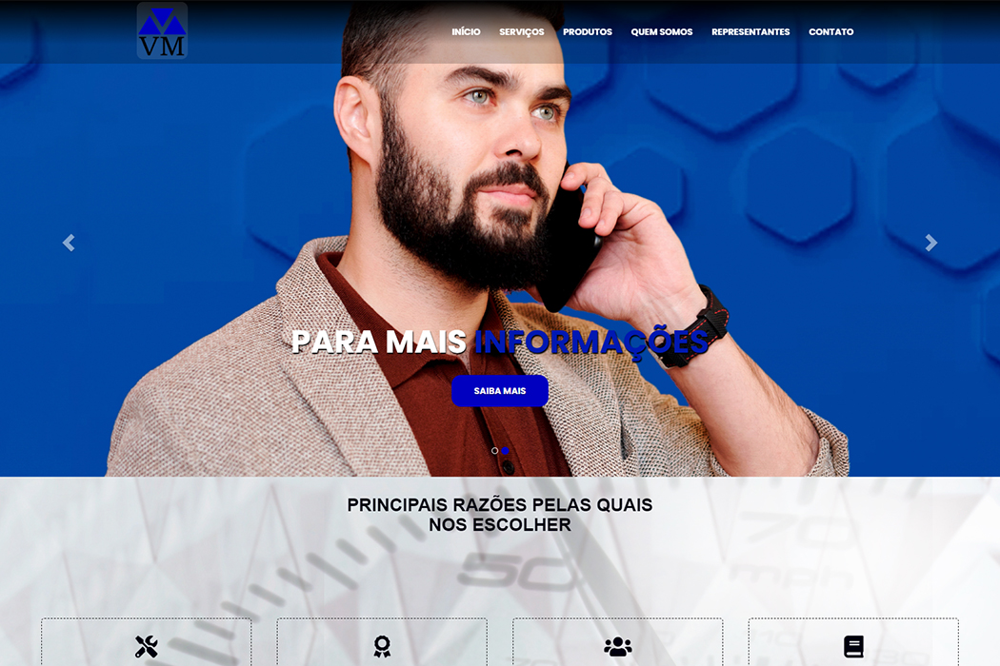
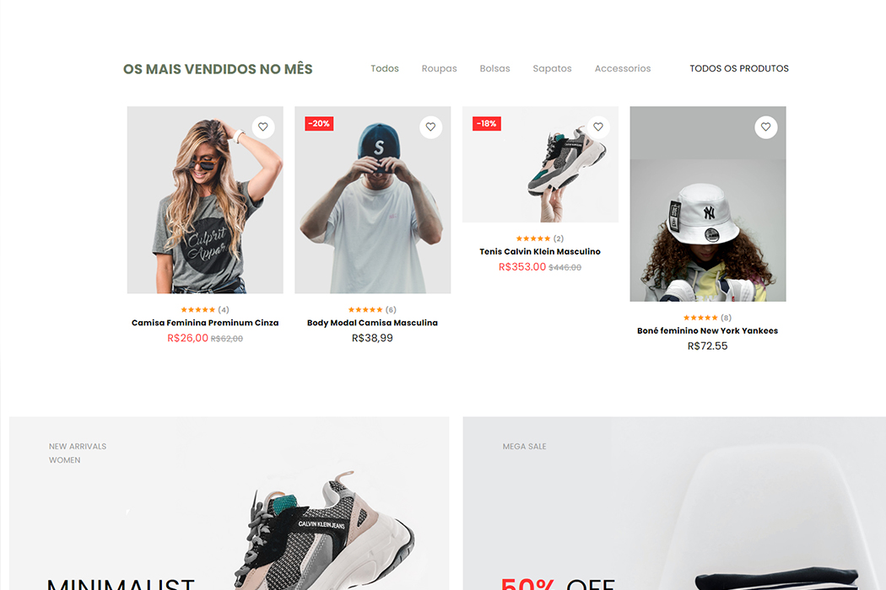
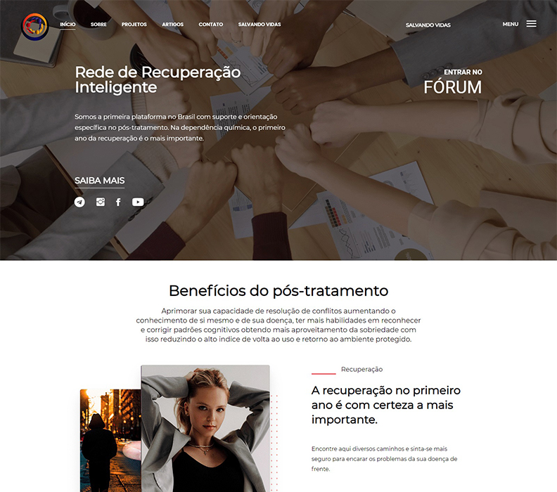
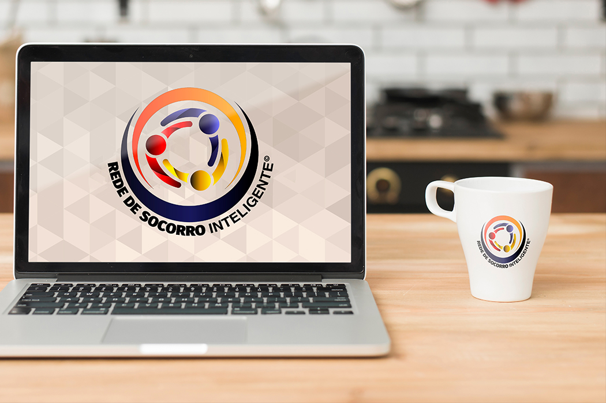
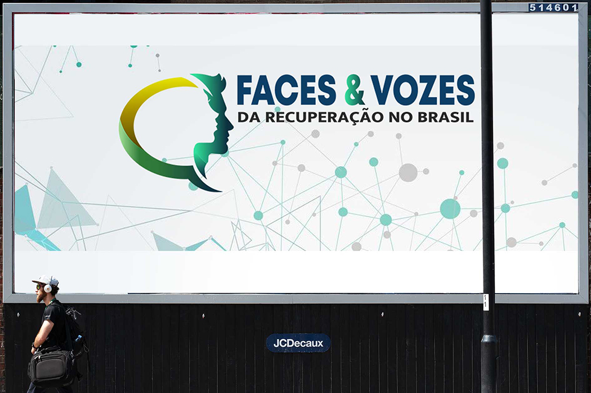
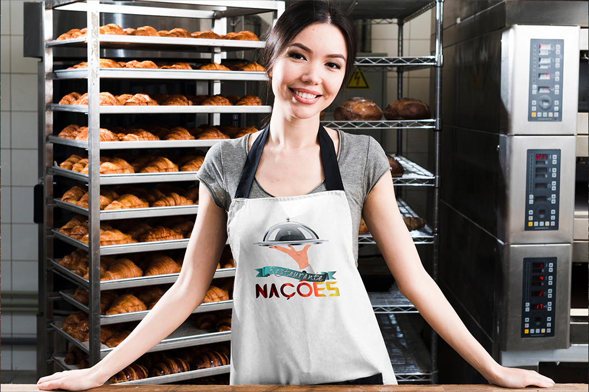
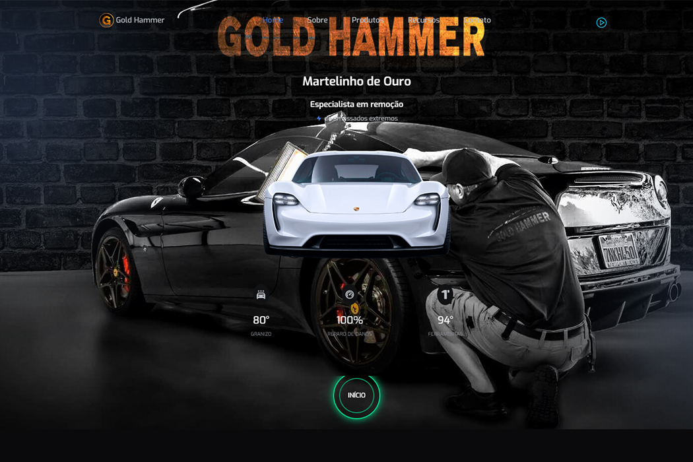
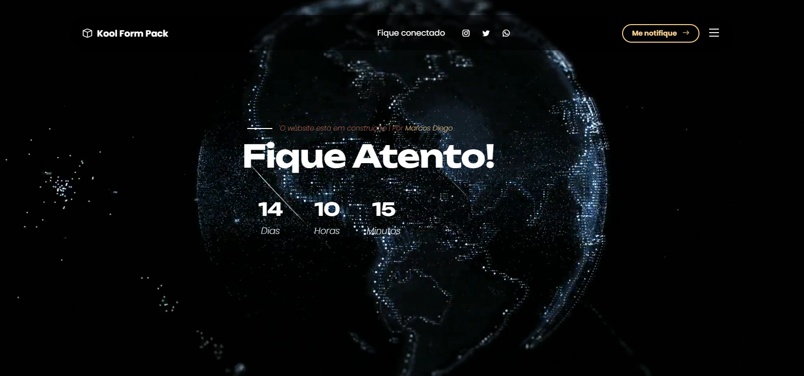

Agosto 2018
VM Instrumentações
Identidade visual - Web Site
Tecnologia: HTML5, CSS3, Javascript, Bootstrap
O projeto foi o desenvolvimento da marca, identidade visual e website da empresa “VM Instrumentações” que atua no segmento de manutenção para instrumentos de medição. Foi construido para o empresário Mauricio Victorino.
Vistar Site

Dezembro 2018
Loja virtual- Wave
E-commerce
E-commerce
E-commerce - Web Site - Gestão de vendas
Tecnologia: React, HTML5, Javascript, JQuery, PHP, SQL
A Wave Fashion foi o desenvolvimento de um e-commerce virtal totalmente funcional com recursos como: listagem de produtos, carrinho de compras, autenticação de usuário, compras e entregas 100% seguras.
Vistar Site

Fevereiro 2022
Rede de Recuperação Inteligente
Identidade Visual - Web Site - Blog - Fórum
Tecnologia: HTML5, CSS3, Javascript, Laravel, JQuery
Esse projeto foi o desenvolvimento de um website com sistema de portfólios para ajuda filantrótica e humanitárias para pessoas com dependências químicas, além de conter videos terapêuticos e assistência jurídica. Construído para o empresário Rodrigo Castro.
Vistar Site

Fevereiro 2022
Rede de Recuperação Inteligente
Identidade visual
Tecnologia: Adobe, Illustrator, Phortoshop, Figma
Do esboço no papel até as ferramentas de design, esse projeto foi a identidade para o empresário Rodrigo Castro. A ideia de uma rede de ajuda filantrópica reflete a imagem do logo e a união em equipe.
Solicitar Orçamento

Julho 2021
Faces e Vozes - Do Brasil
Identidade visual
Tecnologia: Adobe, Illustrator. Photoshop, XD, Figma
O Faces & Voices of Recovery é a principal organização sem fins lucrativos de defesa da recuperação do mundo. Cada país tem seu orgão comunitário. O projeto em questão foi para modificar a logotipo para o estilo visual brasileiro. Construído para o filósofo Alexandre Araújo.
Vistar Site

Março 2019
OT Owtch - Shoop
App Mobile - Android - Ios
Tecnologia: Android, IOs, Fluer
Projeto focado na segurança de vendas pela internet. O App foi desenvolvido como um sistema inerenete a outra plataforma de vendas, era necessário passar pelo aplicativo da OT Owtch Para armazenamento de dados e dar segmento nas compras.
Vistar Play Store

Maio 2021
ETEC - Área do Aluno
App Mobile - Android - IOs
Tecnologia: Java, Android, IOs, Fluer
Projeto realizado para uso da escola de cursos técnicos ETEC, localizado em Jaú. O aplicativo tinha de operar internamente dentro da instituição, sendo para uso dos alunos. Contem: cadastro, painel de notas, cronograma de aulas, avaliação dos professores e chat bate papo.
Vistar Site

Janeiro 2020
Restaurante - Nações Unidas
Identidade visual - Flyer - Logo
Tecnologia: Adobe, Illustrator. Photoshop, XD
Esse é mais um projeto de identidade digital. O restaurante Nações Unidas, localizado na principal avenida de Bauru-SP, atende hoje uma gama de clientes e, com a criação de uma logotipo que atende a demanada, a proprietaria Elizabeth Almeida padronizou sua marca em todos os uniformes do seu empreendimento.
Solicitar Orçamento

Abril 2024
Gold Hammer - Martelinho de Ouro
Identidade visual - Web Site
Tecnologia: HTML5, CSS3, Javascript, Laravel, JQuery
A Gold Hammer é uma oficina especializada no ramo de martelinho de ouro (PDR - paintless dent repair), operando atualmente na cidade de Bauru-SP. Além da prestação de serviços altamente profissionais, contem vendas de ferramentas próprias para o mercado atual.
Vistar Site

Setembro 2024 - Em Construção
Koll Form - Pack
Web Site
Tecnologia: Reactc, HTML5, Javascript, Laravel, JQuery
Kool Pack Form pretende ser uma ferramenta para otimização orgânica de sites e aplicativos em medio e longo prazo. O projeto consiste em uma rede de algoritimos que faça as leituras necessárias para dar as propostas para o SEO otimizar o sistema.
Visualizar Demo